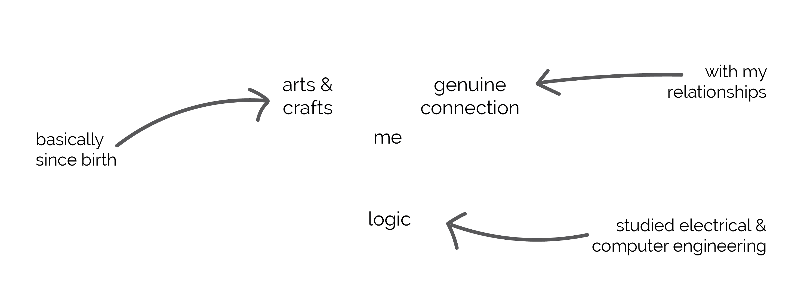

Annie Diep is designing for accessibility, sustainability, and mindfulness.
My name is Annie Diep. I’m an Austin native, a creative, an engineer, a nature lover, a foodie, a yogi, a Longhorn, and a UX Designer.
I believe that information should be accessible and design should reflect the ease of accessibility and ultimately be usable. The form this materializes in is unique across the board depending on the users, the business, and avaliable resources. I enjoy learning and understanding how to bring these aspects together to create seamless products that are an extension of the user.
I'm here because of the experiences that make up my past. Below is a quick overview of me and how I got here. The intersection of creativity, logic, and genuine connection lead me to pursue UX.
In my spare time I enjoy spending time with my friends and family, traveling, and taking a deep dive into my latest obsession.
Thanks for stopping by!


Interesting Facts
- I'm always working on something - a true dabbler.
- I've done one wedding photography gig and am pretty good at it.
- I'm currently working on getting into a handstand.